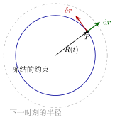
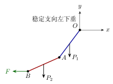
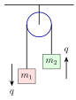
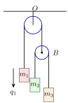
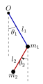
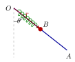
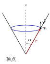
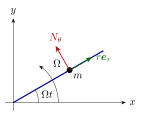
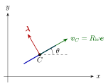

牛顿力学从“力”出发，逐点积分得到运动；拉格朗日力学则从“约束”和“能量”出发，把整个系统的运动压缩成少数几个广义坐标的微分方程。它的核心不是换一套公式，而是换一种组织信息的方式：
\[\text{约束}\ \longrightarrow\ \text{广义坐标}\ \longrightarrow\ \text{虚功与达朗贝尔原理}\ \longrightarrow\ \text{拉格朗日方程}\] \[\longrightarrow\ \text{对称性、守恒律与规范结构}.\]
学习本章时要反复问三个问题：系统的自由度是多少？广义坐标是否选得让约束自动满足？哪一个对称性给出了哪一个守恒量？
3.1约束与广义坐标
3.1.1约束及其分类
在第一章中，我们处理质点或质点系时，往往直接把受力逐个写出。对于由 \(n\) 个质点组成的系统，原则上需要 \(3n\) 个直角坐标。然而真实力学系统几乎总受到限制：刚体内部两点距离不变，轮子在地面上无滑动滚动，摆球被限制在圆周上，滑块被限制在导轨上。这些限制称为约束。
设第 \(i\) 个质点的位矢为 \(\mathbf{r}_i=(x_i,y_i,z_i)\)，约束通常可以写成 \[f_\ell(\mathbf{r}_1,\mathbf{r}_2,\dots,\mathbf{r}_n,t)=0, \qquad \ell=1,2,\dots,m. \tag{3.1}\] 若约束方程只含坐标而不含速度，称为几何约束；若约束方程中还出现速度，则称为运动约束或微分约束。若微分约束可以积分成式 (3.1) 的形式，它本质上仍是几何约束，称为完整约束；若不能积分，则称为非完整约束。
定义 1.1 (完整约束与非完整约束). 若约束可以写成只含坐标和时间的等式 \[f(\mathbf{r}_1,\dots,\mathbf{r}_n,t)=0,\] 则称为完整约束。若约束必须写成不可积分的微分形式 \[\sum_{i=1}^{n}\mathbf a_i(\mathbf{r}_1,\dots,\mathbf{r}_n,t)\cdot \mathrm{d}\mathbf{r}_i +b(\mathbf{r}_1,\dots,\mathbf{r}_n,t)\mathrm{d}t=0,\] 则称为非完整约束。
约束对系统的作用力称为约束力，其余力称为主动力。约束力不是事先给定的力，而是由约束条件和运动状态共同决定的反力；这正是牛顿力学处理受约束系统时最不方便的地方。
例如，质点被限制在半径为 \(R\) 的球面上，约束为 \[x^2+y^2+z^2-R^2=0,\] 这是完整约束。若球面半径随时间变化，\(R=R(t)\)，约束仍可写成 \[x^2+y^2+z^2-R^2(t)=0,\] 仍是完整约束，只是显含时间。相反，半径为 \(R\) 的竖直圆盘在水平面上无滑动滚动时，接触点的速度为零，得到 \[\dot x-R\dot\varphi\cos\theta=0,\qquad \dot y-R\dot\varphi\sin\theta=0,\] 其中 \(\theta\) 是圆盘平面与固定方向的夹角，\(\varphi\) 是圆盘绕自身对称轴的自转角。这两个微分约束一般不能积分为只含坐标的代数方程，因此是非完整约束。

约束还可以按其他方式分类：
定常约束：约束方程不显含时间，\(f(\mathbf{r})=0\)；
非定常约束：约束方程显含时间，\(f(\mathbf{r},t)=0\)；
双侧约束：约束是等式，质点不能从两侧脱离；
单侧约束：约束是不等式，例如 \(z\ge 0\)，质点可以离开约束面；
理想约束：约束力在任意虚位移上所作的总虚功为零。
理想约束是本章最重要的结构性假设。光滑曲面、光滑铰链、刚性杆、不可伸长的轻绳都近似为理想约束。对于理想约束，约束力的总虚功为零，因此它不会进入广义坐标下的运动方程；我们只需处理主动力。滑动摩擦通常须作为主动力处理；无滑动滚动中的静摩擦在适当理想接触模型下可不做虚功，不能单凭“有摩擦”就判为非理想。绳的拉紧条件和单侧接触还须检验反力可实现性。
“约束力不做虚功”并不意味着约束力不做功。真实运动中，约束力完全可能做功，例如外部机构驱动的光滑导轨可通过法向反力向滑块传递能量。虚功中的位移是同一时刻、只满足约束的假想位移，时间被冻结，所以法向约束力与虚位移正交，虚功才为零。
3.1.2自由度与广义坐标
设有 \(n\) 个质点、\(m\) 个完整约束。若在所考察的正则位形邻域中，这些约束对位置坐标的雅可比矩阵具有秩 \(m\)，则独立坐标数为 \[s=3n-m. \tag{3.2}\] \(s\) 称为系统的自由度。我们可以选一组 \(s\) 个独立参数 \[q_1,q_2,\dots,q_s,\] 使得所有质点的位矢都可以表示为 \[\mathbf{r}_i=\mathbf{r}_i(q_1,q_2,\dots,q_s,t), \qquad i=1,2,\dots,n. \tag{3.3}\] 这组参数称为广义坐标。它们通常只是位形空间的局部坐标。机械系统中可以是长度或角度；扩展到机电模型时也可以用电荷，但不能把不同模型的自由变量混为一谈。重要的是它们彼此独立，并且自动满足全部完整约束。同一系统可以选多组不同的广义坐标，物理结果不依赖于坐标选择；好的选择通常能让 \(T\) 和 \(V\) 更简单。
对时间求导，得到广义速度 \[\dot q_a=\frac{\mathrm{d}q_a}{\mathrm{d}t},\qquad a=1,2,\dots,s.\] 质点的速度可以写成 \[\mathbf{v}_i=\sum_{a=1}^{s}\frac{\partial \mathbf{r}_i}{\partial q_a}\dot q_a+\frac{\partial \mathbf{r}_i}{\partial t}. \tag{3.4}\] 其中第一项是广义速度引起的部分，第二项来自参数化的显式时间依赖，可由移动约束或含时坐标选择引起。
例 1.1 (球坐标与双摆). 质量为 \(m\) 的质点被约束在球面上，取球坐标 \((r,\theta,\varphi)\)，约束为 \(r=R\)。自由度 \(s=2\)，广义坐标可取 \(q_1=\theta,q_2=\varphi\)。若取 \(r\) 也作为广义坐标，则约束没有自动满足，后续必须用乘子处理。
平面双摆由两根长为 \(l_1,l_2\) 的轻杆和两个质量 \(m_1,m_2\) 组成。四个直角坐标减去两个杆长约束，自由度 \(s=2\)，广义坐标可取两杆与竖直方向的夹角 \(\theta_1,\theta_2\)。这两个角度自动满足杆长约束，因此拉格朗日方程中不会出现杆的张力。
3.1.3位形空间
所有广义坐标取值的集合构成一个 \(s\) 维空间，称为位形空间。系统的运动对应位形空间中的一条曲线 \(q_a=q_a(t)\)。局部坐标不必覆盖全部位形，例如摆角按 \(2\pi\) 周期识别，不能把坐标图边界当成物理边界。运动由方程和初始数据确定；作用量的固定端点表述则比较连接给定端点的路径。本章将使用上一章的变分法说明二者的关系，固定两端一般不保证解存在或唯一。
3.2虚功原理与达朗贝尔原理
3.2.1虚位移与虚功
设系统在时刻 \(t\) 处于满足约束的位形。想象在时间 \(t\) 冻结的条件下，系统发生一个无穷小位移 \(\delta\mathbf{r}_i\)，它仍然满足约束的线性化条件。这样的位移称为虚位移。对完整约束，虚位移满足 \(\sum_i(\partial f_\ell/\partial\mathbf{r}_i)\cdot\delta\mathbf{r}_i=0\)，位于冻结约束的切空间；对本章采用的理想、仿射速度非完整模型，容许虚位移由达朗贝尔规则规定为约束系数的齐次核；它一般不是比较两条都满足速度约束的路径得到的任意变分。详见本章非完整系统一节。虚位移与真实位移 \(\mathrm{d}\mathbf{r}_i\) 的关键区别是： \[\delta t=0, \qquad \mathrm{d}\mathbf{r}_i=\sum_a\frac{\partial \mathbf{r}_i}{\partial q_a}\mathrm{d}q_a+\frac{\partial \mathbf{r}_i}{\partial t}\mathrm{d}t, \qquad \delta\mathbf{r}_i=\sum_a\frac{\partial \mathbf{r}_i}{\partial q_a}\delta q_a. \tag{3.5}\] 真实位移可能包含约束随时间变化产生的项，虚位移没有这一项。若选用无显式时间依赖的定常参数化，\(\partial\mathbf{r}_i/\partial t=0\)，两者的容许切向形式相同，但真实位移由实际速度确定，虚位移则仍可独立选取；对于非定常约束，两者一般不同。
作用在第 \(i\) 个质点上的力为 \(\mathbf{F}_i\)，在虚位移上作的功 \[\delta W=\sum_{i=1}^{n}\mathbf{F}_i\cdot\delta\mathbf{r}_i\] 称为虚功。把力分成主动力 \(\mathbf{F}_i^{(a)}\) 和约束力 \(\mathbf{N}_i\)，则 \[\delta W=\sum_i\mathbf{F}_i^{(a)}\cdot\delta\mathbf{r}_i +\sum_i\mathbf{N}_i\cdot\delta\mathbf{r}_i.\]
3.2.2虚功原理 ✦ 交互模拟：虚功原理与静力学 ↗
若约束是理想的，第二项为零。于是虚功原理可以表述为：
受理想双侧约束的力学系统，在静止的定常约束上、排除奇异位形时，主动力可由理想约束反力平衡的条件是：对任意满足约束（或其线性化条件）的虚位移，主动力所作的总虚功为零， \[\delta W=\sum_{i=1}^{n}\mathbf{F}_i^{(a)}\cdot\delta\mathbf{r}_i=0. \tag{3.6}\]
用广义坐标表示，\(\delta\mathbf{r}_i=\sum_a(\partial\mathbf{r}_i/\partial q_a)\delta q_a\)，于是 \[\delta W=\sum_{a=1}^{s}Q_a\,\delta q_a, \qquad Q_a=\sum_{i=1}^{n}\mathbf{F}_i^{(a)}\cdot\frac{\partial \mathbf{r}_i}{\partial q_a}. \tag{3.7}\] \(Q_a\) 称为与 \(q_a\) 对应的广义力。广义力的量纲一般不是力的量纲，因为 \(q_a\) 的量纲不一定是长度；但乘积 \(Q_a\delta q_a\) 必须具有功的量纲。由于 \(\delta q_a\) 彼此独立，平衡条件 \(\delta W=0\) 等价于 \[Q_a=0,\qquad a=1,2,\dots,s. \tag{3.8}\] 这就是广义坐标下的平衡方程。
例 1.2 (两杆平衡：同一正切值有不同稳定性). 固定铰支点 \(O\)，等长均匀杆 \(OA,AB\) 长均为 \(l\)、重量为 \(P_1,P_2\)，铰链理想。取 \(x\) 向右、\(y\) 向上，两杆绝对角从 \(+x\) 逆时针量起，记为 \(\alpha,\beta\)。在 \(B\) 施加恒定向左力 \(F>0\)，其势能为 \(Fx_B\)。两杆质心高度分别为 \(l\sin\alpha/2\) 与 \(l\sin\alpha+l\sin\beta/2\)，所以总势为 \[U=l[(P_1/2+P_2)\sin\alpha+F\cos\alpha] +l[(P_2/2)\sin\beta+F\cos\beta].\] 虚功为 \(-\delta U\)，两坐标独立，平衡要求 \[(P_1/2+P_2)\cos\alpha-F\sin\alpha=0, \qquad(P_2/2)\cos\beta-F\sin\beta=0.\] 只写正切会丢失象限。令 \(A_1=P_1/2+P_2,A_2=P_2/2\)，稳定下垂支应取 \[\cos\alpha=-\frac{F}{\sqrt{F^2+A_1^2}},\quad \sin\alpha=-\frac{A_1}{\sqrt{F^2+A_1^2}},\] \(\beta\) 将 \(A_1\) 换为 \(A_2\)。两角均在第三象限（或等价的负角区间）。此时 \(U_{\alpha\alpha}=l\sqrt{F^2+A_1^2}>0\)、\(U_{\beta\beta}=l\sqrt{F^2+A_2^2}>0\)，交叉导数为零，确为势能极小。两角同时取相反方向也满足相同的正切式，却是极大分支。
\(F\to0\) 时稳定支竖直向下；\(F\) 很大时向左近乎水平。消去铰链反力简化了计算，但不会替代平衡稳定性和几何分支的检查。

3.2.3达朗贝尔原理
虚功原理原本只适用于静力学。达朗贝尔在 1743 年注意到：若把惯性力 \(-m_i\ddot\mathbf{r}_i\) 也看作一种“力”，则动力学问题可以转化为瞬时静力学问题。定义达朗贝尔惯性力 \[\mathbf{F}_i^{\rm inertia}=-m_i\ddot\mathbf{r}_i,\] 则对每个质点有 \[\mathbf{F}_i+\mathbf{N}_i+\mathbf{F}_i^{\rm inertia}=0,\] 其中 \(\mathbf{F}_i\) 为主动力，\(\mathbf{N}_i\) 为约束力。在理想约束下，约束力的总虚功为零，因此 \[\sum_{i=1}^{n}\left(\mathbf{F}_i-m_i\ddot\mathbf{r}_i\right)\cdot\delta\mathbf{r}_i=0. \tag{3.9}\] 这就是达朗贝尔原理。它不是新的物理定律，而是牛顿第二定律与理想约束假设的结合；其价值在于把约束力消去，并把动力学问题写成变分形式。
达朗贝尔原理的“惯性力”不是参考系变换意义下的惯性力，而是一个形式上的记账项。它的作用是把 \(m\ddot\mathbf{r}\) 从方程右边移到左边，使动力学方程看起来像平衡方程。真正进入虚功的是主动力与惯性力的合力。
3.3拉格朗日方程
3.3.1从达朗贝尔原理导出
我们已把位矢写成广义坐标的函数 \(\mathbf{r}_i=\mathbf{r}_i(q,t)\)。速度 \[\mathbf{v}_i=\dot\mathbf{r}_i=\sum_a\frac{\partial \mathbf{r}_i}{\partial q_a}\dot q_a+\frac{\partial \mathbf{r}_i}{\partial t}.\] 由此得到两个关键恒等式： \[\frac{\partial \mathbf{v}_i}{\partial \dot q_a}=\frac{\partial \mathbf{r}_i}{\partial q_a}, \qquad \frac{\mathrm{d}}{\mathrm{d}t}\left(\frac{\partial \mathbf{r}_i}{\partial q_a}\right)=\frac{\partial \mathbf{v}_i}{\partial q_a}. \tag{3.10}\] 这不是对任意函数都可随意交换两个算子。这里逐项展开为 \[\frac{\partial\mathbf{v}_i}{\partial q_a} =\sum_b\frac{\partial^2\mathbf{r}_i}{\partial q_a\partial q_b}\dot q_b +\frac{\partial^2\mathbf{r}_i}{\partial q_a\partial t} =\frac{\mathrm{d}}{\mathrm{d}t}\left(\frac{\partial\mathbf{r}_i}{\partial q_a}\right),\] 偏导时保持 \(\dot q\) 不变，并利用 \(\mathbf{r}_i(q,t)\) 的混合偏导连续。第一式则直接来自速度对 \(\dot q_a\) 的线性依赖。
系统的动能 \[T=\frac12\sum_i m_i\mathbf{v}_i^2.\] 利用式 (3.10)， \[\frac{\partial T}{\partial \dot q_a}=\sum_i m_i\mathbf{v}_i\cdot\frac{\partial \mathbf{v}_i}{\partial \dot q_a} =\sum_i m_i\mathbf{v}_i\cdot\frac{\partial \mathbf{r}_i}{\partial q_a},\] \[\frac{\partial T}{\partial q_a}=\sum_i m_i\mathbf{v}_i\cdot\frac{\partial \mathbf{v}_i}{\partial q_a}.\] 于是 \[\frac{\mathrm{d}}{\mathrm{d}t}\left(\frac{\partial T}{\partial \dot q_a}\right)-\frac{\partial T}{\partial q_a} =\sum_i m_i\ddot\mathbf{r}_i\cdot\frac{\partial \mathbf{r}_i}{\partial q_a}.\] 另一方面，达朗贝尔原理中的惯性力项为 \[-\sum_i m_i\ddot\mathbf{r}_i\cdot\delta\mathbf{r}_i =-\sum_a\left[\sum_i m_i\ddot\mathbf{r}_i\cdot\frac{\partial \mathbf{r}_i}{\partial q_a}\right]\delta q_a.\] 主动力的虚功为 \(\sum_a Q_a\delta q_a\)。代入式 (3.9)，并利用 \(\delta q_a\) 的独立性，得到 \[\boxed{ \frac{\mathrm{d}}{\mathrm{d}t}\left(\frac{\partial T}{\partial \dot q_a}\right)-\frac{\partial T}{\partial q_a}=Q_a, \qquad a=1,2,\dots,s. } \tag{3.11}\] 这就是拉格朗日方程的基本形式。它把 \(3n\) 个直角坐标的牛顿方程压缩成 \(s\) 个广义坐标方程，约束力自动消失。
若主动力可用位置势 \(V(q,t)\) 表示，且没有额外做虚功的非保守力，则 \[Q_a=-\frac{\partial V}{\partial q_a}.\] 定义拉格朗日函数 \[L(q,\dot q,t)=T(q,\dot q,t)-V(q,t), \tag{3.12}\] 则式 (3.11) 化为 \[\boxed{ \frac{\mathrm{d}}{\mathrm{d}t}\left(\frac{\partial L}{\partial \dot q_a}\right)-\frac{\partial L}{\partial q_a}=0, \qquad a=1,2,\dots,s. } \tag{3.13}\] 这是分析力学中最常用的形式。
拉格朗日方程的三个要点：
只出现广义坐标、广义速度和广义力，不出现理想约束力；
对完整系统，方程数目等于自由度 \(s\)，而不是质点数 \(3n\)；
对质量恒定、完整理想约束且主动力由位置势描述的模型，写出 \(T,V\) 与初始数据即可建立独立坐标方程；但接触保持、摩擦可行性或支承载荷仍可能需要求约束力。
3.3.2从哈密顿原理导出
拉格朗日方程也可以从整体变分原理得到。定义作用量 \[S[q]=\int_{t_1}^{t_2}L(q,\dot q,t)\,\mathrm{d}t. \tag{3.14}\] 在所有满足端点条件 \[q_a(t_1)=q_{a1},\qquad q_a(t_2)=q_{a2}\] 的曲线中，真实运动使作用量取驻值： \[\delta S=0. \tag{3.15}\] 这是通常的哈密顿驻作用量原理。此处使用独立广义坐标、固定时间和位置端点；\(L\) 可显含时间，也可包含电磁速度耦合，不能把它仅限于不显含时间的位置保守势。任意耗散力则不能自动由这个简单作用量给出。把 \(\delta S\) 展开，并注意变分与时间导数可交换：\(\delta\dot q_a=\frac{\mathrm{d}}{\mathrm{d}t}\delta q_a\)， \[\delta S=\int_{t_1}^{t_2}\sum_a \left(\frac{\partial L}{\partial q_a}\delta q_a+\frac{\partial L}{\partial \dot q_a}\delta\dot q_a\right)\mathrm{d}t.\] 对第二项分部积分，并利用端点处 \(\delta q_a(t_1)=\delta q_a(t_2)=0\)： \[\delta S=\int_{t_1}^{t_2}\sum_a \left[\frac{\partial L}{\partial q_a}-\frac{\mathrm{d}}{\mathrm{d}t}\left(\frac{\partial L}{\partial \dot q_a}\right)\right]\delta q_a\,\mathrm{d}t.\] 由于 \(\delta q_a\) 在内部彼此独立且任意，括号必须为零，即得到式 (3.13)。在上述完整、理想且力可由所选 \(L\) 描述的条件下，两种表述给出同一组方程；前者是“逐时刻”的表述，后者是“整条路径”的表述。
注 1.1. 哈密顿原理中的端点固定，但端点处的速度不固定。变分只比较在相同时间间隔内、从同一起点到同一终点的路径。若端点时间也可变，则会得到更一般的能量关系；这一点在第六章讨论哈密顿-雅可比理论时还会出现。
3.3.3非保守广义力与受驱动运动
若部分力已用 \(L\) 表示，另有外力、阻尼或控制力矩，其虚功为 \(\sum_a Q_a^{\rm nc}\delta q_a\)，则 \[\frac{\mathrm{d}}{\mathrm{d}t}L_{\dot q_a}-L_{q_a}=Q_a^{\rm nc}. \tag{3.16}\] 这里不是令非保守作用量驻值，而是采用拉格朗日–达朗贝尔表述 \(\delta\int L\mathrm{d}t+\int\sum_a Q_a^{\rm nc}\delta q_a\mathrm{d}t=0\)。额外力不应既写进势又在右端重复加入。
若黏滞阻尼的广义力可写为 \(Q_a^{\rm damp}=-\partial\mathcal D/\partial\dot q_a\)，则用耗散函数 \(\mathcal D=\frac12\sum_{ab}C_{ab}\dot q_a\dot q_b\) 表示。\(C\) 对称半正定时，\(\sum_a Q_a^{\rm damp}\dot q_a=-2\mathcal D\le0\)；\(\mathcal D\) 的量纲为功率，不是势能。它描述这一类黏滞模型，不能自动包括静摩擦阈值或所有耗散。
例 1.3 (有阻尼和关节驱动力矩的单摆). 固定摆长 \(l\)，角度从向下方向量起，\(L=ml^2\dot\theta^2/2+mgl\cos\theta\)。若关节黏滞力矩为 \(-b\dot\theta\)，驱动力矩为 \(\tau(t)\)，则 \[ml^2\ddot\theta+b\dot\theta+mgl\sin\theta=\tau(t).\] 以最低点势能为零的机械能 \(E=ml^2\dot\theta^2/2+mgl(1-\cos\theta)\) 满足 \[\dot E=-b\dot\theta^2+\tau\dot\theta.\] 无驱动时单调耗散；驱动可输入或取出能量。\(b=\tau=0\) 恢复第一章单摆。这既训练广义力矩，也给数值计算提供可检查的能量收支。
3.3.4典型应用 ✦ 交互模拟：有转动惯量的 Atwood 机 ↗
本节依次训练三个步骤：先用坐标自动满足约束，再从惯性速度构造动能，最后以守恒量或牛顿方程独立验算。所有绳、杆均按题目理想化，工程背景只用于说明模型用途，不代表具体设备的实测参数。
例 1.4 (阿特伍德机). 质量分别为 \(m_1,m_2\) 的两物体用不可伸长的轻绳跨过定滑轮，绳与滑轮间无滑动，滑轮质量和转动惯量均忽略不计。取 \(q\) 为 \(m_1\) 下落的距离，则 \(m_2\) 上升 \(q\)。动能和势能分别为 \[T=\frac12(m_1+m_2)\dot q^2, \qquad V=-m_1gq+m_2gq.\] 拉格朗日函数 \[L=T-V=\frac12(m_1+m_2)\dot q^2+(m_1-m_2)gq.\] 代入式 (3.13)： \[(m_1+m_2)\ddot q=(m_1-m_2)g,\] 即 \[\ddot q=\frac{m_1-m_2}{m_1+m_2}g.\] 绳的张力没有出现在方程中；若要它，需回到约束力或使用乘子法。

例 1.5 (双滑轮三质量系统). 一个定滑轮 \(O\) 固定，一根轻绳跨过 \(O\)，左端挂质量为 \(m_1\) 的物体，右端悬挂一个动滑轮 \(B\)；第二根轻绳跨过 \(B\)，两端分别挂质量为 \(m_2,m_3\) 的物体。绳与滑轮间无滑动，绳不可伸长，滑轮质量和转动惯量均忽略。取 \(q_1\) 为 \(m_1\) 向下的位移，取 \(q_2\) 为 \(m_2\) 相对动滑轮 \(B\) 向下的位移。求系统的运动方程。

由于第一根绳长不变，\(B\) 的速度为 \(-\dot q_1\)（取向下为正）。第二根绳长不变，因此 \[v_2=-\dot q_1+\dot q_2, \qquad v_3=-\dot q_1-\dot q_2.\] 系统的动能和势能分别为 \[T=\frac12m_1\dot q_1^2+\frac12m_2(-\dot q_1+\dot q_2)^2 +\frac12m_3(-\dot q_1-\dot q_2)^2,\] \[V=-m_1gq_1-m_2g(-q_1+q_2)-m_3g(-q_1-q_2).\] 拉格朗日函数 \(L=T-V\)。代入拉格朗日方程，得到 \[(m_1+m_2+m_3)\ddot q_1+(m_3-m_2)\ddot q_2 =(m_1-m_2-m_3)g,\] \[(m_3-m_2)\ddot q_1+(m_2+m_3)\ddot q_2 =(m_2-m_3)g.\] 写成矩阵形式： \[\begin{pmatrix} m_1+m_2+m_3 & m_3-m_2\\ m_3-m_2 & m_2+m_3 \end{pmatrix} \begin{pmatrix}\ddot q_1\\ \ddot q_2\end{pmatrix} =g\begin{pmatrix}m_1-m_2-m_3\\ m_2-m_3\end{pmatrix}.\] 两个广义坐标自动满足两根绳的约束，绳中张力不必出现在方程中。
这类“多绳—多滑轮”系统是电梯配重、塔吊起升、缆索驱动并联机器人和空间吊装系统的基本模型。工程上关心的是各段绳的张力、负载的加速度和系统的固有频率；拉格朗日方法先消去绳张力，再用矩阵方程统一求解，比逐段列牛顿方程更适合多自由度系统。
例 1.6 (球坐标中的质点). 质量为 \(m\) 的质点在有心力势 \(V(r)\) 中运动，取球坐标 \((r,\theta,\varphi)\) 为广义坐标，并把极轴取为 \(z\) 轴。速度为 \[\mathbf{v}=\dot r\,\hat{\mathbf{e}}_r+r\dot\theta\,\hat{\mathbf{e}}_\theta+r\sin\theta\,\dot\varphi\,\hat{\mathbf{e}}_\varphi,\] 动能为 \[T=\frac12m\left(\dot r^2+r^2\dot\theta^2+r^2\sin^2\theta\,\dot\varphi^2\right).\] 拉格朗日函数 \[L=\frac12m\left(\dot r^2+r^2\dot\theta^2+r^2\sin^2\theta\,\dot\varphi^2\right)-V(r).\] \(\varphi\) 是循环坐标，因此 \[p_\varphi=\frac{\partial L}{\partial \dot\varphi}=mr^2\sin^2\theta\,\dot\varphi\] 守恒，这就是角动量的 \(z\) 分量。对 \(\theta\) 的方程为 \[\frac{\mathrm{d}}{\mathrm{d}t}\left(mr^2\dot\theta\right) -mr^2\sin\theta\cos\theta\,\dot\varphi^2=0.\] 在 \(r>0\) 且方程正则的区域，若初始 \(\theta=\pi/2,\dot\theta=0\)，赤道平面是方程的不变子集；径向距离不必固定。对 \(r\) 的方程给出 \[m\ddot r-mr\dot\theta^2-mr\sin^2\theta\,\dot\varphi^2 =-\frac{\partial V}{\partial r}.\] 这正是有心力场中的径向方程。
例 1.7 (双摆：把耦合项逐项算出来). 两根无质量刚杆长为 \(l_1,l_2\)，端点质量为 \(m_1,m_2>0\)，固定支点，运动限于竖直平面。两绝对角 \(\theta_1,\theta_2\) 均从向下竖直方向量起，坐标为 \[\mathbf{r}_1=(l_1\sin\theta_1,-l_1\cos\theta_1),\qquad \mathbf{r}_2=\mathbf{r}_1+(l_2\sin\theta_2,-l_2\cos\theta_2).\] 令 \(\Delta=\theta_1-\theta_2\)，微分后由点积 \(\mathbf{v}_1\cdot(\mathbf{v}_2-\mathbf{v}_1)=l_1l_2\dot\theta_1\dot\theta_2\cos\Delta\) 得 \[\begin{aligned} T&=\tfrac12(m_1+m_2)l_1^2\dot\theta_1^2+\tfrac12m_2l_2^2\dot\theta_2^2 +m_2l_1l_2\cos\Delta\,\dot\theta_1\dot\theta_2,\\ V&=-(m_1+m_2)gl_1\cos\theta_1-m_2gl_2\cos\theta_2. \end{aligned}\tag{3.17}\] 取 \(D=m_2l_1l_2\)，第一方程的动量和坐标导数是 \[p_1=(m_1+m_2)l_1^2\dot\theta_1+D\cos\Delta\dot\theta_2, \quad L_{\theta_1}=-D\sin\Delta\dot\theta_1\dot\theta_2-(m_1+m_2)gl_1\sin\theta_1.\] 对 \(p_1\) 求时间导数时还须微分 \(\cos\Delta\)。与 \(L_{\theta_1}\) 相减后，两个含 \(\dot\theta_1\dot\theta_2\) 的项抵消，得到 \[\begin{aligned} (m_1+m_2)l_1^2\ddot\theta_1+D\cos\Delta\ddot\theta_2 +D\sin\Delta\dot\theta_2^2+(m_1+m_2)gl_1\sin\theta_1&=0,\\ m_2l_2^2\ddot\theta_2+D\cos\Delta\ddot\theta_1 -D\sin\Delta\dot\theta_1^2+m_2gl_2\sin\theta_2&=0. \end{aligned}\tag{3.18}\] 第二式由相同方法得到，注意两项正负号。写成 \(M(\theta)\ddot\theta+b(\theta,\dot\theta)=0\)，质量矩阵行列式为 \[\det M=m_2l_1^2l_2^2[m_1+m_2\sin^2\Delta]>0.\] 因此物理参数为正时可解出两角加速度；不能把速度耦合项略去后仍声称是精确双摆。无驱动、无阻尼下 \(T+V\) 守恒；小角展开将导向第四章耦合小振动。加入关节力矩后，右侧为各角对应的广义力矩，是平面机械臂模型的一个出发点，但本例的质点杆端质量假设不同于一般有质量机械臂。

例 1.8 (旋转圆环上的小珠：驱动约束改变平衡). 半径 \(R\) 的竖直光滑圆环绕竖直直径以给定 \(\Omega\) 匀速旋转。小珠质量 \(m\)，用从最低点量起的角 \(\theta\) 描述位置： \[\mathbf{r}=(R\sin\theta\cos\Omega t,R\sin\theta\sin\Omega t,-R\cos\theta).\] 直接微分给出 \(v^2=R^2\dot\theta^2+R^2\Omega^2\sin^2\theta\)，所以 \[L=\tfrac12mR^2\dot\theta^2+\tfrac12mR^2\Omega^2\sin^2\theta+mgR\cos\theta,\] \[\ddot\theta=\sin\theta(\Omega^2\cos\theta-g/R).\] 平衡为 \(\theta=0,\pi\)，并在 \(\Omega^2>g/R\) 时出现两支 \(\theta=\pm\arccos[g/(\Omega^2R)]\)。最低点线性方程为 \(\ddot\eta+(g/R-\Omega^2)\eta=0\)，故临界转速前稳定、之后不稳定；新分支的平方频率为 \(\Omega^2\sin^2\theta_0>0\)。临界点线性恢复项消失，须看高阶，不能仅凭零频率判为不稳定。
本例 \(E_L=mR^2\dot\theta^2/2-mR^2\Omega^2\sin^2\theta/2-mgR\cos\theta\) 守恒；电机维持给定转速，珠的惯性机械能不一定守恒。第1章给出了有效势方法，本章从惯性系动能重建同一结果；第四章再系统讨论平衡附近的展开。
例 1.9 (弹簧摆). 一根自然长度为 \(l\)、劲度系数为 \(k\) 的轻弹簧，一端固定，另一端连接质量为 \(m\) 的质点。取弹簧伸长量为 \(x\)、摆角为 \(\theta\)，则摆长为 \(l+x\)。动能和势能分别为 \[T=\frac12m\left[\dot x^2+(l+x)^2\dot\theta^2\right],\] \[V=-mg(l+x)\cos\theta+\frac12kx^2.\] 拉格朗日函数 \(L=T-V\)。对 \(x\) 和 \(\theta\) 分别求导，得到 \[m\ddot x-m(l+x)\dot\theta^2-mg\cos\theta+kx=0,\] \[m(l+x)^2\ddot\theta+2m(l+x)\dot x\dot\theta +mg(l+x)\sin\theta=0.\] 这两个方程是非线性的，且彼此耦合。平衡点为 \(\theta=0,x=mg/k\)；小振动需围绕这个伸长后的平衡展开，而非默认 \(x=0\)。第四章将系统处理。
例 1.10 (旋转杆上的滑块与弹簧). 质量为 \(m_1\)、长为 \(l\) 的均匀杆 \(OA\) 绕水平轴 \(O\) 在竖直平面内转动。质量为 \(m_2\) 的滑块 \(B\) 套在杆上，可在杆上无摩擦滑动；一根劲度系数为 \(k\)、自然长度为 \(r_0\) 的轻弹簧沿杆放置，一端固定在 \(O\)，另一端连接 \(B\)。取杆与竖直向下方向的夹角为 \(\theta\)，\(r=OB\) 为滑块到 \(O\) 的距离。求系统的运动方程。

杆绕 \(O\) 的转动惯量为 \[I=\int_0^l s^2\frac{m_1}{l}\,\mathrm{d}s=\frac13m_1l^2.\] 系统的动能为 \[T=\frac12I\dot\theta^2+\frac12m_2\left(\dot r^2+r^2\dot\theta^2\right),\] 势能为 \[V=-m_1g\frac l2\cos\theta-m_2gr\cos\theta+\frac12k(r-r_0)^2.\] 拉格朗日函数 \(L=T-V\)。对 \(\theta\) 的方程为 \[\left(I+m_2r^2\right)\ddot\theta+2m_2r\dot r\dot\theta +\left(\frac{m_1l}{2}+m_2r\right)g\sin\theta=0,\] 对 \(r\) 的方程为 \[m_2\left(\ddot r-r\dot\theta^2\right)-m_2g\cos\theta +k(r-r_0)=0.\] 第一式是转动方程，第二式是滑块沿杆的径向方程；\(2m_2r\dot r\dot\theta\) 是由转动惯量随 \(r\) 改变产生的耦合项。两条式子均由惯性系动能导出，不能再额外加一次非惯性系的惯性力。
这个刚性伸缩机构模型把径向运动与转动耦合写成两个广义坐标方程。滑块移动改变转动惯量，角速度又影响径向加速度，可据此练习角动量与能量的交叉检查。若研究实际柔性伸缩机构，还须增加杆的弹性自由度、驱动和阻尼；这里的刚杆模型本身不预测其变形或工程性能。
例 1.11 (两体问题的约化). 两个质量 \(m_1,m_2\) 的质点只受彼此相互作用 \(V(|\mathbf{r}_1-\mathbf{r}_2|)\)。引入质心 \(\mathbf{R}\) 和相对位矢 \(\mathbf{r}=\mathbf{r}_1-\mathbf{r}_2\)： \[\mathbf{R}=\frac{m_1\mathbf{r}_1+m_2\mathbf{r}_2}{m_1+m_2}, \qquad \mathbf{r}=\mathbf{r}_1-\mathbf{r}_2, \qquad \mu=\frac{m_1m_2}{m_1+m_2}.\] 反解出 \[\mathbf{r}_1=\mathbf{R}+\frac{m_2}{m_1+m_2}\mathbf{r}, \qquad \mathbf{r}_2=\mathbf{R}-\frac{m_1}{m_1+m_2}\mathbf{r}.\] 代入总动能并利用一次项相消，得到 \[T=\frac12(m_1+m_2)\dot{\mathbf{R}}^2+\frac12\mu\dot{\mathbf{r}}^2.\] 于是拉格朗日函数分解为 \[L=\frac12(m_1+m_2)\dot{\mathbf{R}}^2 +\frac12\mu\dot{\mathbf{r}}^2-V(r).\] 质心运动是自由的，相对运动等价于一个质量为 \(\mu\) 的质点在中心势 \(V(r)\) 中运动。这个分解在第一章已从牛顿方程得到；拉格朗日方法把它变成动能项的代数分解，更加直接。
例 1.12 (圆锥面上的圆轨道). 一个顶点在下、开口向上的光滑圆锥，对称轴竖直向上，半顶角为 \(\alpha\)。质量为 \(m\) 的质点被约束在圆锥面上运动。取 \(r\) 为质点沿母线到顶点的距离，\(\varphi\) 为绕轴的方位角。求质点的运动方程，并讨论圆轨道的可能性。

由几何关系，质点到轴的距离为 \(\rho=r\sin\alpha\)，相对顶点的竖直高度为 \(z=r\cos\alpha\)。因此 \[T=\frac12m\left(\dot r^2+r^2\sin^2\alpha\,\dot\varphi^2\right), \qquad V=mgr\cos\alpha.\] 拉格朗日函数 \[L=\frac12m\left(\dot r^2+r^2\sin^2\alpha\,\dot\varphi^2\right) -mgr\cos\alpha.\] \(\varphi\) 是循环坐标，故 \[p_\varphi=mr^2\sin^2\alpha\,\dot\varphi=\text{常量}.\] 对 \(r\) 的方程为 \[m\ddot r-mr\sin^2\alpha\,\dot\varphi^2+mg\cos\alpha=0.\] 若质点做半径为 \(r_0\) 的圆轨道，则 \(\dot r=0\)，上式给出 \[\dot\varphi^2=\frac{g\cos\alpha}{r_0\sin^2\alpha}.\] 本例的圆轨道半径沿母线量取，要求 \(0<\alpha<\pi/2\)、\(r_0>0\)；顶点处坐标退化。固定 \(p_\varphi\) 的径向稳定性还可直接求出 \(\omega_r^2=3g\cos\alpha/r_0>0\)。也可以用有效势能 \[V_{\rm eff}(r)=\frac{p_\varphi^2}{2mr^2\sin^2\alpha}+mgr\cos\alpha\] 理解：圆轨道对应 \(V_{\rm eff}'(r_0)=0\)，稳定性由 \(V_{\rm eff}''(r_0)\) 判断。
锥面上的圆轨道是锥形离心分离器、旋转料斗、颗粒筛选和锥形离心机的简化模型。本例仅说明约束面上的轨道。该单质点方程中质量约去，不能单独推出按粒径或密度分选；真实分离还需流体阻力、接触等机制。
例 1.13 (旋转系中的两中心势：有效势不能代替全部拉格朗日量). 两个主星绕共同质心以恒定角速度 \(n\) 作圆周运动。取随其旋转、原点在质心的平面坐标 \((x,y)\)，惯性速度的旋转基分量是 \((\dot x-ny,\dot y+nx)\)。令 \(V(x,y)=-GM_1m/r_1-GM_2m/r_2\)，其中 \(r_1,r_2\) 为到两主星的距离。由惯性系动能直接构造 \[L=\tfrac12m(\dot x^2+\dot y^2)+mn(x\dot y-y\dot x) +\tfrac12mn^2(x^2+y^2)-V.\] 对 \(x\)，\(p_x=m\dot x-mny\)，\(L_x=mn\dot y+mn^2x-V_x\)，故 \[\ddot x-2n\dot y=-\partial_x\Phi_{\rm eff},\qquad \ddot y+2n\dot x=-\partial_y\Phi_{\rm eff}, \quad \Phi_{\rm eff}=V/m-\tfrac12n^2(x^2+y^2).\] 速度一次项产生科里奥利项，不能把 \(L\) 错写成仅有转动系相对动能减去有效势，否则会漏掉它。原来的动能已用惯性速度计算，也不能再额外加入惯性力重复计算。
由于这个 \(L\) 不显含时间，它的能量函数为 \[E_L=\tfrac12m(\dot x^2+\dot y^2)+m\Phi_{\rm eff},\qquad C_J=-2E_L/m.\] \(C_J\) 是常用的雅可比积分，不是粒子在惯性系中的普通机械能。平衡点仍由 \(\nabla\Phi_{\rm eff}=0\) 给出，位置及稳定性已在第1章讨论。本例的目的，是看出速度耦合、离心势及守恒量如何同时从一个 \(L\) 得到。
3.3.5冲量与广义冲量
若系统在极短时间内受到冲力，位移可以忽略，但广义速度发生突变。对拉格朗日方程在 \([t_-,t_+]\) 上积分，仅忽略有界项 \(\partial L/\partial q_a\) 及有限普通力的积分，保留冲力的 \(Q_a\) 积分，得到 \[\left.\frac{\partial L}{\partial \dot q_a}\right|_{t_+} -\left.\frac{\partial L}{\partial \dot q_a}\right|_{t_-} =\widehat Q_a, \tag{3.19}\] 其中 \(\widehat Q_a=\int_{t_-}^{t_+}Q_a\,\mathrm{d}t\) 称为广义冲量。这里假设冲击期间位形及约束几何不变，约束本身不突变；若存在非理想冲量或接触模式切换，还须给出冲击约束和恢复定律，不能仅靠该式决定所有末速度。
3.4对称性与守恒律
3.4.1循环坐标与广义动量
定义广义动量 \[p_a=\frac{\partial L}{\partial \dot q_a}. \tag{3.20}\] 广义动量的量纲一般也不等于动量的量纲，因为 \(q_a\) 的量纲不一定是长度；它与广义坐标共轭，满足 \(p_a\delta q_a\) 具有作用量的量纲。若 \(L\) 不显含某个广义坐标 \(q_a\)，即 \[\frac{\partial L}{\partial q_a}=0,\] 则 \(q_a\) 称为循环坐标或可遗坐标。拉格朗日方程给出 \[\frac{\mathrm{d}}{\mathrm{d}t}\left(\frac{\partial L}{\partial \dot q_a}\right)=0,\] 于是 \[p_a=\text{常量}. \tag{3.21}\] 这就是循环积分。
本小节的循环动量结论假设独立完整坐标且对应的额外广义力为零；非完整约束的反力将另行讨论。循环坐标不一定“看不见”。在中心力场中，极角 \(\varphi\) 是循环坐标，对应的广义动量正是角动量。在均匀重力场中，水平坐标 \(x\) 是循环坐标，对应水平动量守恒。在完整、理想约束下，循环坐标的本质是系统在某个连续变换下保持不变。
例 1.14 (中心力场的角动量). 质量为 \(m\) 的质点在势 \(V(r)\) 中运动。在极坐标下 \[L=\frac12m\left(\dot r^2+r^2\dot\varphi^2\right)-V(r).\] \(\varphi\) 不出现，故 \[p_\varphi=mr^2\dot\varphi=\text{常量}.\] 这正是角动量守恒。若用直角坐标，\(L\) 同时含有 \(x,y\)，两个坐标都不是循环坐标，但组合 \(xp_y-yp_x\) 守恒。拉格朗日方法自动把对称性对应的守恒量识别出来。
3.4.2能量函数与能量收支
定义 \[E_L(q,\dot q,t)=\sum_a\dot q_ap_a-L,\qquad p_a=L_{\dot q_a}. \tag{3.22}\] 若有未包含于 \(L\) 的广义力 \(Q_a^{\rm nc}\)，方程为 \(\dot p_a-L_{q_a}=Q_a^{\rm nc}\)。对 \(E_L\) 逐项求导，含 \(p_a\ddot q_a\) 的两项抵消，留下 \[\begin{aligned} \dot E_L &=\sum_a[\dot q_a\dot p_a+p_a\ddot q_a] -\sum_a[L_{q_a}\dot q_a+L_{\dot q_a}\ddot q_a]-L_t\\ &=\sum_a Q_a^{\rm nc}\dot q_a-L_t. \end{aligned}\tag{3.23}\] 因此无额外广义力且 \(L_t=0\) 时 \[E_L=\text{常量}. \tag{3.24}\] 若参数化 \(\mathbf{r}_i(q,t)\) 含时间，动能通常分为速度二次、一次、零次项 \(T=T_2+T_1+T_0\)。对位置势 \(V(q,t)\)，欧拉齐次函数公式给出 \[\sum_a\dot q_aT_{\dot q_a}=2T_2+T_1,\qquad E_L=T_2-T_0+V.\] 它与惯性系机械能 \(T+V\) 一般不同。只有使用定常参数化、\(T=T_2\) 且势不依赖速度等条件时，才有 \(E_L=T+V\)。\(L_t=0\) 是当前表示中 \(E_L\) 守恒的充分条件，不能反过来断言任意显含时间的 \(L\) 都没有任何能量守恒量；全导数或坐标变化也会改变显式时间依赖。
例 1.15 (外部驱动旋转杆：守恒的 \(E_L\) 与增长的机械能). 水平光滑直杆由电机以恒定角速度 \(\Omega\) 绕固定端转动。质量 \(m\) 的滑块在杆上径向运动，弹簧势为 \(kr^2/2\)；忽略重力对水平运动的影响，取 \(r>0\)，不碰端点。惯性速度由 \(\mathbf{r}=r(\cos\Omega t,\sin\Omega t)\) 求导，给出 \[T=\tfrac12m(\dot r^2+\Omega^2r^2),\qquad L=\tfrac12m\dot r^2-\tfrac12(k-m\Omega^2)r^2.\] 径向方程与能量函数是 \[m\ddot r+(k-m\Omega^2)r=0,\qquad E_L=\tfrac12m\dot r^2+\tfrac12(k-m\Omega^2)r^2=\text{常量}.\] 但物理机械能为 \(E_{\rm mech}=m\dot r^2/2+(k+m\Omega^2)r^2/2\)。由第一章极坐标加速度，杆的切向反力为 \(N_\theta=2m\Omega\dot r\)，故 \[\dot E_{\rm mech}=2m\Omega^2r\dot r =N_\theta(\Omega r)=\Omega\frac{\mathrm{d}}{\mathrm{d}t}(mr^2\Omega).\] 电机通过移动的理想约束交换能量；零虚功不等于零真实功。\(\Omega\to0\) 时两个能量一致。\(k=m\Omega^2\) 是径向恢复项退化的情况，不能继续套用非零振动频率。

3.4.3诺特定理：把变换和边界项一同写清楚
本节限于具有独立坐标的完整系统、无额外非保守力。采用一阶点变换 \[t_\epsilon=t+\epsilon\tau(q,t),\qquad q_{a,\epsilon}(t_\epsilon)=q_a(t)+\epsilon\xi_a(q,t)+O(\epsilon^2). \tag{3.25}\] 总坐标变化的系数为 \(\xi_a\)，而在同一时间比较两条曲线的变化为 \[\eta_a=\xi_a-\dot q_a\tau. \tag{3.26}\] 参数变换还改变时间测度：\(\mathrm{d}t_\epsilon=(1+\epsilon\dot\tau)\mathrm{d}t\)，速度的变化系数为 \(\dot\xi_a-\dot q_a\dot\tau\)，点表示沿路径全导数。
若对任意邻近路径而不只对运动方程的解，有恒等关系 \[\sum_a\left[L_{q_a}\xi_a+p_a(\dot\xi_a-\dot q_a\dot\tau)\right] +L_t\tau+L\dot\tau=\frac{\mathrm{d}B(q,t)}{\mathrm{d}t}, \tag{3.27}\] 则作用量只改变端点项，称为准对称性；\(B=0\) 是严格不变的特例。必须比较 \(L\mathrm{d}t\)，时间也变时不能只比较 \(L\)。
定义欧拉方程左侧 \(\mathcal E_a=\dot p_a-L_{q_a}\)。利用能量函数的恒等关系 \(\dot E_L=\sum_a\dot q_a\mathcal E_a-L_t\) 以及上式，直接对以下组合求导： \[\frac{\mathrm{d}}{\mathrm{d}t}\left(\sum_ap_a\xi_a-E_L\tau-B\right) =\sum_a\mathcal E_a(\xi_a-\dot q_a\tau). \tag{3.28}\] 具体可写为 \[\dot C=\sum_a(\dot p_a-L_{q_a})\xi_a-(\dot E_L+L_t)\tau =\sum_a\mathcal E_a(\xi_a-\dot q_a\tau).\] 右边还没有使用运动方程；沿真实解 \(\mathcal E_a=0\)，故 \[\boxed{C=\sum_ap_a\xi_a-E_L\tau-B=\text{常量}.} \tag{3.29}\] 这就是本章采用的诺特定理。固定时间的坐标对称性只需取 \(\tau=0\)；一维时间平移取 \(\tau=1,\xi_a=0,B=0\)，得到 \(C=-E_L\)，守恒量整体差一个负号不影响其意义。
例 1.16 (三个对称性及一个边界项). 平移。 若 \(q_a\) 为循环坐标，取 \(\xi_a=1\)、其他生成元为零、\(\tau=B=0\)，则 \(C=p_a\)。但完整系统中仍有 \(\dot p_a=L_{q_a}+Q_a^{\rm nc}\)，存在额外广义力时须另检验。
转动。 对 \(L=m(\dot r^2+r^2\dot\varphi^2)/2-V(r)\)，取 \(\xi_\varphi=1\)，得到 \(C=mr^2\dot\varphi\)。这与第一章零力矩证明是同一事实的两种表述，不能否定其中任何一种。
时间平移。 自治系统给出 \(E_L\) 守恒；在定常自然系统中才进一步识别为机械能。
伽利略匀速变换。 一维自由粒子 \(L=m\dot x^2/2\)，取 \(\xi=t,\tau=0\)，则 \(\delta L/\epsilon=m\dot x=\mathrm{d}(mx)/\mathrm{d}t\)，所以 \(B=mx\)，守恒量为 \(pt-mx\)。直接用 \(p=\text{常量}\)、\(x=x_0+pt/m\) 得 \(pt-mx=-mx_0\)。若漏掉边界项，会误将 \(pt\) 当作守恒量。
诺特定理中的对称变换不是固定端点变分原理中的任意试探变分：对称变换可以移动端点。守恒律来自“作用量的变化是边界项”与运动方程的结合。先猜出一个量沿解为常数，也不等于已经证明对应变换在任意路径上是作用量对称性。
3.4.4全导数等价与它的边界
设 \(G(q,t)\) 足够光滑，\(L'=L+\mathrm{d}G/\mathrm{d}t\)。固定时间和位置端点时，\(S'-S=[G]_{t_1}^{t_2}\) 为固定数，不改变驻值方程。其动量和能量函数变为 \[p_a'=p_a+G_{q_a},\qquad E_L'=E_L-G_t.\] 因此它们的坐标表达未必不变。若边界位置自由，\([G]\) 会改变自然边界条件；若取依赖 \(\dot q\) 的 \(G\)，固定位置并不固定该端点项，且 \(\mathrm{d}G/\mathrm{d}t\) 引入高阶导数，不能直接冒充这里的同类一阶变分问题。
3.5约束力恢复与非完整系统
3.5.1完整约束的乘子：求回被消去的反力
若希望保留冗余坐标 \(q\) 并求反力，设独立完整约束为 \(f_\ell(q,t)=0\)。对 \[S_{\rm aug}=\int\left[L(q,\dot q,t)+\sum_\ell\lambda_\ell(t)f_\ell(q,t)\right]\mathrm{d}t\] 分别变分 \(q\) 与乘子，得到 \[\frac{\mathrm{d}}{\mathrm{d}t}L_{\dot q_a}-L_{q_a} =\sum_\ell\lambda_\ell f_{\ell,q_a}+Q_a^{\rm nc},\qquad f_\ell=0. \tag{3.30}\] 反力的广义分量为 \(R_a=\sum\lambda_\ell f_{\ell,q_a}\)。乘子的单位取决于 \(f\) 的归一化：把约束乘2会把同一反力对应的乘子除2，故不能不作换算就将乘子本身称为张力。
例 1.17 (用直角坐标恢复单摆张力). 取 \(y\) 向上，\(L=m(\dot x^2+\dot y^2)/2-mgy\)，约束 \(f=(x^2+y^2-l^2)/2=0\)。上式给出 \[m\ddot x=\lambda x,\qquad m\ddot y+mg=\lambda y.\] 对约束二次求导，\(x\ddot x+y\ddot y=-(\dot x^2+\dot y^2)=-v^2\)，故 \[\lambda=\frac{-mv^2+mgy}{l^2},\qquad \mathcal T=-\lambda l=m\left(\frac{v^2}{l}-\frac{gy}{l}\right).\] 用 \(y=-l\cos\theta\) 得 \(\mathcal T=m(l\dot\theta^2+g\cos\theta)\)，与第一章法向方程一致。轻绳只能拉，需 \(\mathcal T\ge0\)；若算出负值，圆周约束解对绳失效，但刚杆可承受轴向推力。
对显含时间的理想完整约束，真实速度满足 \(\sum_a f_{\ell,q_a}\dot q_a=-f_{\ell,t}\)，约束力功率为 \(\sum_aR_a\dot q_a=-\sum_\ell\lambda_\ell f_{\ell,t}\)。这再次说明零虚功不等于零真实功。
3.5.2仿射速度约束与达朗贝尔乘子方程
完整约束已由坐标消去后，若还存在满秩的仿射速度约束 \[\sum_a A_{\ell a}(q,t)\dot q_a+B_\ell(q,t)=0, \qquad\ell=1,\ldots,k, \tag{3.31}\] 本章采用理想达朗贝尔模型，其容许虚位移规则是 \[\sum_a A_{\ell a}\delta q_a=0. \tag{3.32}\] 这是对约束反力方向的物理建模，不能不加论证地推广到任意非线性速度约束。对上式核空间中任意向量，达朗贝尔方程左端与之正交，因此其残量位于 \(A\) 的行空间： \[\boxed{\frac{\mathrm{d}}{\mathrm{d}t}L_{\dot q_a}-L_{q_a} =Q_a^{\rm nc}+\sum_\ell\lambda_\ell A_{\ell a}.} \tag{3.33}\] 连同速度约束、相容初始条件求解。\(s\) 仍是位形维数，\(s-k\) 是当前容许速度方向的维数，不代表总能消去成 \(s-k\) 个独立位置坐标。
齐次约束 \(B_\ell=0\) 时反力功率为零；仿射约束则为 \(-\sum\lambda_\ell B_\ell\)。即使 \(L\) 自治，后者也可改变 \(E_L\)。循环坐标的动量满足 \(\dot p_a=Q_a^{\rm nc}+\sum\lambda_\ell A_{\ell a}\)，一般不守恒；若对称生成元还满足 \(A\xi=0\)，相应约束反力投影才消失。
3.5.3滚动圆盘：完整的求解与守恒检查
例 1.18 (保持竖直的理想滚动盘). 盘质量 \(m\)、半径 \(R\)，模型额外限制盘始终竖直、中心高度为 \(R\)，只允许平面位移 \((x,y)\)、朝向角 \(\theta\) 与自转角 \(\varphi\)。可将保持竖直的支承视为理想约束；这不是允许自由倾斜的真实圆盘的一般运动。取转动惯量 \(I,J>0\) 分别对应自转与朝向转动， \[L=T=\tfrac12m(\dot x^2+\dot y^2)+\tfrac12I\dot\varphi^2+\tfrac12J\dot\theta^2,\] \[\dot x=R\dot\varphi\cos\theta,\qquad \dot y=R\dot\varphi\sin\theta.\] 乘子方程逐项为 \[\begin{aligned} m\ddot x&=\lambda_1,& m\ddot y&=\lambda_2,\\ I\ddot\varphi&=-R(\lambda_1\cos\theta+\lambda_2\sin\theta),& J\ddot\theta&=0. \end{aligned}\tag{3.34}\] 对速度约束求导后，沿朝向投影得 \(\lambda_1\cos\theta+\lambda_2\sin\theta=mR\ddot\varphi\)，于是 \[(I+mR^2)\ddot\varphi=0,\qquad \ddot\theta=0.\] 令 \(\dot\varphi=\omega,\dot\theta=\Omega\) 为常数，则 \[(\lambda_1,\lambda_2)=mR\omega\Omega(-\sin\theta,\cos\theta).\] \(\Omega=0\) 时中心走直线，\(\Omega\ne0\) 时走半径 \(|R\omega/\Omega|\) 的圆。这说明虽然 \(L\) 不含 \(x,y\)，\(m\dot x,m\dot y\) 仍可改变；不是所有循环坐标都给独立守恒动量。
反力功率为 \(\lambda_1\dot x+\lambda_2\dot y-R(\lambda_1\cos\theta+\lambda_2\sin\theta)\dot\varphi=0\)，故总动能守恒。还必须确认静摩擦等真实支承能提供所需反力；本题未给摩擦系数，不能无条件断言任意 \(\omega,\Omega\) 均可实现。

3.5.4为什么不能直接把速度约束加进作用量？
若把上述约束作为 \(L_{\rm aug}=L+\mu_1(\dot x-R\dot\varphi\cos\theta)+\mu_2(\dot y-R\dot\varphi\sin\theta)\)，再对所有路径作普通固定端点变分，\(\theta\) 方程变为 \[J\ddot\theta=R\dot\varphi(\mu_1\sin\theta-\mu_2\cos\theta),\] 一般不同于达朗贝尔模型的 \(J\ddot\theta=0\)。这种对受限路径作用量求驻值的方法称为变分约束方法（vakonomic）；它可对应某些最优控制问题，但不能自动代替真实理想滚动的动力学。
差别来自允许的变分：若一族路径都满足 \(A(q,t)\dot q+B(q,t)=0\)，其线性化包含 \(A\dot\eta\)、\(A_{,q}\eta\dot q\) 和 \(B_{,q}\eta\)，并不等价于每个时刻仅要求 \(A\eta=0\)。而达朗贝尔虚位移正是后一类力学投影。该区分是处理非完整系统的核心，不是乘子符号的选择问题。
滚动盘的容许速度由 \(X_1=\partial_\theta\) 与 \(X_2=R\cos\theta\partial_x+R\sin\theta\partial_y+\partial_\varphi\) 张成。先改变朝向再滚动与反序操作并不等效；其交换子为 \([X_1,X_2]=-R\sin\theta\partial_x+R\cos\theta\partial_y\)，不在两者张成空间内，因此不能把这两个速度方向全局视作两维位置曲面的切平面。这个几何判断需向量场与弗罗贝尼乌斯定理，可留作拓展。
阿佩尔和凯恩方法也从独立速度方向投影动力学。对完整独立坐标，\(\mathcal S=\sum_i m_i|\mathbf{a}_i|^2/2\) 满足 \(\partial\mathcal S/\partial\ddot q_a=\sum_i m_i\mathbf{a}_i\cdot\partial\mathbf{r}_i/\partial q_a=Q_a\)，但这不是在非完整情况下对全部冗余 \(q_a\) 无条件成立的公式；需先选相容独立速度并变换加速度，再作投影。详细理论参见章末受约束系统原始研究，本章不展开工程算法。
3.6带电粒子、正则动量与规范等价
3.6.1从势耦合逐分量导出洛伦兹力
设非相对论粒子质量 \(m\) 恒定、电荷为 \(e\)（可正可负），外场给定，不计辐射反作用。定义 \[\mathbf{E}=-\nabla\phi-\partial_t\mathbf{A},\qquad \mathbf{B}=\nabla\times\mathbf{A},\] \[L=\tfrac12m\mathbf{v}^2-e\phi+e\mathbf{A}\cdot\mathbf{v}. \tag{3.35}\] 正则动量与机械动量不同： \[\mathbf{p}=\frac{\partial L}{\partial\mathbf{v}}=m\mathbf{v}+e\mathbf{A}. \tag{3.36}\] 对第 \(i\) 个分量，取坐标偏导时保持速度独立， \[\frac{\mathrm{d}}{\mathrm{d}t}(mv_i+eA_i)=-e\partial_i\phi+e\sum_j v_j\partial_i A_j.\] 用全导数 \(\mathrm{d}A_i/\mathrm{d}t=\partial_t A_i+\sum_jv_j\partial_jA_i\) 展开，得 \[m\dot v_i=e(-\partial_i\phi-\partial_tA_i) +e\sum_jv_j(\partial_iA_j-\partial_jA_i).\] 最后一项正是 \(e(\mathbf{v}\times\mathbf{B})_i\)，于是 \[m\dot\mathbf{v}=e(\mathbf{E}+\mathbf{v}\times\mathbf{B}). \tag{3.37}\] 对速度点乘，磁力不做功，\(\dot T=e\mathbf{E}\cdot\mathbf{v}\)。能量函数为 \(E_L=T+e\phi\)；若所选势不显含时间，它守恒。外场若随时间变化则可能向粒子传能，完整“粒子加场及场源”的能量平衡不应只对测试粒子闭合计算。
3.6.2规范变换为什么不改变轨道？
取单值光滑函数 \(\chi(\mathbf{r},t)\)，势变为 \[\mathbf{A}'=\mathbf{A}+\nabla\chi,\qquad \phi'=\phi-\partial_t\chi. \tag{3.38}\] 梯度的旋度为零、混合偏导相消，故场强不变，而 \[L'=L+e\frac{\mathrm{d}\chi}{\mathrm{d}t},\qquad \mathbf{p}'=\mathbf{p}+e\nabla\chi,\qquad E_L'=E_L-e\partial_t\chi.\] 这正是 \(G=e\chi\) 的全导数等价。固定时空端点时轨道不变，动量和能量函数的表示可以改变。不可把“改变规范”说成一种产生新轨道或新力的物理操作；它是同一外场的描述冗余。
例 1.19 (均匀磁场的同一平移守恒量，两种规范). 取 \(\mathbf{B}=B\hat{\mathbf{k}}\)、\(\phi=0\)。在 \(\mathbf{A}=(-By,0,0)\) 下， \[L=\tfrac12m(\dot x^2+\dot y^2+\dot z^2)-eBy\dot x,\] \(x\) 为循环坐标，所以 \(C=m\dot x-eBy\) 守恒。作 \(\chi=Bxy\)，新势为 \(\mathbf{A}'=(0,Bx,0)\)，新 \(L'\) 显含 \(x\)，但 \(x\to x+\epsilon\) 给出 \[\delta L'/\epsilon=eB\dot y=\frac{\mathrm{d}(eBy)}{\mathrm{d}t}.\] 因此诺特边界项为 \(B_{\rm N}=eBy\)，守恒量为 \(p'_x-B_{\rm N}=m\dot x-eBy\)，与先前相同。机械动量 \(m\dot x\) 一般不守恒；正则动量是否直接显为守恒，依赖所用规范和边界项。洛伦兹方程也直接给出 \(m\ddot x-eB\dot y=0\)，形成独立核验。
场是在时空各点定义的量。电磁势具有规范冗余，场强由其导数给出；温度场等一般标量场不能因此称为规范联络。局域规范冗余与普通机械坐标的整体诺特对称性不同。进一步讨论需电磁场本身的作用量与边界条件，超出本章。
3.7通向小振动与哈密顿力学
对定常自然系统，\(L=\dot q^{\mathsf T}M(q)\dot q/2-V(q)\)。在平衡 \(q_0\) 附近令 \(q=q_0+\eta\)，\(\nabla V(q_0)=0\)，保留二阶拉格朗日量为 \[L^{(2)}=\tfrac12\dot\eta^{\mathsf T}M(q_0)\dot\eta -\tfrac12\eta^{\mathsf T}K(q_0)\eta, \qquad K_{ab}=\left.\frac{\partial^2V}{\partial q_a\partial q_b}\right|_{q_0}.\] 它直接给出 \(M\ddot\eta+K\eta=0\)。第四章将研究稳定性、正常模和质量加权正交性，而非只把复杂摆都当作单个简谐振子。
几何上，广义坐标是位形空间的局部参数，\((q,\dot q)\) 包含位置与速度信息。第六章在速度Hessian可逆等条件下用勒让德变换把速度换成 \(p=L_{\dot q}\)；这里的 \(E_L\) 才转成相空间上的哈密顿函数。不要提前把所有约束模型、奇异速度势或非完整投影都直接当作普通可逆的哈密顿系统。
3.8计算与模拟：检查方程，而非只看动画
对无驱动双摆，先从式 (3.18) 求解 \(2\times2\) 线性系统得到 \(\ddot\theta\)，再将状态写成 \((\theta_1,\theta_2,\dot\theta_1,\dot\theta_2)\) 积分。用同一组初值和物理参数，比较步长 \(h\) 与 \(h/2\)；记录能量 \(E=T+V\) 的误差，并确认质量矩阵在沿途可逆。四阶Runge–Kutta方法的短时收敛可作检验，但它不是严格能量保持算法，不能由一段看似合理的动画推断长期保真。
对阻尼摆应检查 \(E(t)-E(0)=\int_0^t[-b\dot\theta^2+\tau\dot\theta]\mathrm{d}t\)，不能仍要求 \(E\) 恒定；对受驱动旋转杆则分别记录 \(E_L\) 与 \(E_{\rm mech}\)。随附数值脚本为
review/verify_ch03.py
它对本章解析模型作独立检查，输出误差和收敛记录。所有模拟参数为教学设定，不代表实际机器人或航天器。
关键概念与常见误区
广义坐标是位形的独立局部参数，不是把任意几个变量改个名字；使用约束数减法前须检查秩。
虚位移冻结时间，真实位移包含实际速度和显式时间依赖。理想约束指零总虚功，未必零真实功。
构造动能时若已使用惯性速度，不应再在同一方程重复加入科里奥利或离心力。
\(L=T-V\) 是重要模型，但电磁作用含速度一次项；正则动量未必是机械动量。
\(E_L\) 的守恒、机械能的守恒和外部机构的功率是不同问题，应写出各自条件。
诺特定理要求作用量在指定变换下恒等地不变或只差边界项；不能遗漏时间测度和全导数。
非完整系统中速度方向不独立，普通循环坐标结论可能被约束反力改变；受限路径驻值与达朗贝尔投影通常不同。
本章小结
本章从约束几何选坐标，以达朗贝尔原理投影牛顿方程，得到包含非保守广义力的拉格朗日方程；在合适的完整系统中，第二章的固定端点变分给出等价的作用量表述。乘子法用于恢复反力，不能把它与独立坐标消元混淆。对称性及其边界项组织守恒律，能量收支则检验受驱动和受阻尼模型。第四章将在这一框架内系统展开稳定平衡附近的小振动。
分层习题
约束与秩。 三维双摆的两个杆长约束在杆长非零时有多少独立约束和位形自由度？若另限制两球在同一固定竖直平面中，如何恢复平面双摆的两个自由度？
虚位移。 质点在 \(x^2+y^2=R(t)^2\) 的受驱动圆周上运动。写出虚位移和真实速度必须满足的两个关系，并说明为何径向反力可零虚功而非零功率。
推导训练。 对 \(\mathbf{r}_i(q,t)\) 逐项验证式 (3.10)，再从动能导出拉格朗日惯性项，不把“偏导和全导总可交换”作为理由。
平衡分支。 两杆例题中取 \(P_1=P_2=P,F=9P/8\)。写出稳定支的两组正弦余弦，并分析只把一根杆反向会得到极小、极大还是鞍点。
阿特伍德机。 在正文忽略滑轮惯量的假设下求绳张力；再令滑轮有给定转动惯量 \(I\)、半径 \(a\)，且无滑动，求加速度并说明两侧张力是否仍相等。
双摆。 独立导出双摆第二方程，核对 \(-D\sin\Delta\dot\theta_1^2\) 的符号；在最低平衡附近写出 \(M_0,K_0\)，而不直接把两角看成独立单摆。
弹簧摆。 在 \(x_0=mg/k,\theta_0=0\) 附近线性化，求径向和角向频率，说明为什么应使用伸长后的摆长。
转动杆滑块。 对正文带有质量杆和弹簧的两坐标系统，用角动量定理核验 \(2m_2r\dot r\dot\theta\) 项；说明令 \(\theta=\Omega t\) 给定时为什么必须另有外部驱动力矩。
耗散。 对无驱动阻尼摆，证明 \(E\) 单调不增；若希望保持非零匀速 \(\dot\theta=\omega_c\)，写出所需力矩随角度的函数，不可只令平均驱动补偿阻尼。
驱动能量。 对恒速旋转水平杆上的弹簧滑块，验证 \(\dot E_L=0\)、\(\dot E_{\rm mech}=\Omega\dot J_z\)；讨论 \(k-m\Omega^2\) 为正、零、负时的径向行为及有限杆端点的限制。
乘子归一化。 用 \(f=x^2+y^2-l^2\) 而非 \(f/2\) 重算单摆反力，比较乘子数值和物理张力；判断什么时候轻绳约束会失效。
诺特边界项。 对自由粒子匀速变换 \(\xi=t\)，证明守恒的是 \(pt-mx\)，并解释为何 \(pt\) 本身不守恒。再取时间平移 \(\tau=1,\xi=0\) 核对诺特荷的符号。
全导数。 取 \(L'=L+\mathrm{d}G(q,t)/\mathrm{d}t\)，独立算出 \(p'\)、\(E_L'\)。若 \(G=atq\)（\(a\) 为常数且单位使 \(G\) 为作用量），显式时间依赖是否必然意味着原物理系统没有能量守恒量？
非完整滚动。 用正文约束与乘子方程推出 \(\ddot\varphi=\ddot\theta=0\)，给出 \(\Omega\ne0\) 时圆心轨迹，并核验反力功率；说明圆盘 \(x\) 坐标循环却动量不守恒的原因。
两种受限变分。 对正文直接加速度约束的增广作用量计算 \(\theta\) 方程，与达朗贝尔模型比较。仅仅给乘子改名能消掉差异吗？
规范与守恒量。 在均匀磁场两种规范下，分别由诺特边界项和洛伦兹方程验证同一个 \(m\dot x-eBy\) 守恒；机械动量和正则动量各有什么不同？
小振动与旋转系。 (a) 对旋转圆环的小珠推导非竖直平衡支的小振动频率。(b) 对两中心旋转系求 \(E_L\)，说明为何仅用有效势构造 \(L\) 会漏掉科里奥利项。
计算检查。 运行双摆两步长模拟，比较相同短时区间的能量误差；对受驱动杆同时输出两种能量。说明本章各模型应检验的量为何不同，不把不守恒的物理量误当成算法误差。
解题思路与结果
六个位置坐标、两个独立杆长约束，位形维数为4。再各加一个离开指定平面的坐标约束，剩2；若约束奇异或重复，不能简单照数相减。
冻结时间给 \(\mathbf{r}\cdot\delta\mathbf{r}=0\)，真实速度给 \(\mathbf{r}\cdot\mathbf{v}=R\dot R\)。若反力为 \(N\mathbf{r}/R\)，功率为 \(N\dot R\)，虚功为零。
先写 \(\mathbf{v}_i=\mathbf{r}_{i,q_b}\dot q_b+\mathbf{r}_{i,t}\)，再求各偏导并使用混合偏导连续性。惯性投影为 \(\sum_i m_i\mathbf{a}_i\cdot\mathbf{r}_{i,q_a}\)，与正文两项之差一致。
第一杆 \(\cos\alpha=-3/5,\sin\alpha=-4/5\)；第二杆 \(\cos\beta=-9/\sqrt{97},\sin\beta=-4/\sqrt{97}\)。只反向一根杆使势能Hessian一正一负，是鞍点。
无惯量时 \(\mathcal T=2m_1m_2g/(m_1+m_2)\)。有惯量时有效质量增为 \(m_1+m_2+I/a^2\)，加速度为 \((m_1-m_2)g/(m_1+m_2+I/a^2)\)；两侧张力差提供转矩，\(\mathcal T_1-\mathcal T_2=I\ddot q/a^2\)。
对 \(\cos\Delta\dot\theta_1\) 求导后与坐标偏导相减，混合速度项抵消。最低点处 \[M_0=\begin{pmatrix}(m_1+m_2)l_1^2&m_2l_1l_2\\m_2l_1l_2&m_2l_2^2\end{pmatrix},\quad K_0=\begin{pmatrix}(m_1+m_2)gl_1&0\\0&m_2gl_2\end{pmatrix}.\]
径向频率 \(\omega_r=\sqrt{k/m}\)，角向频率 \(\omega_\theta=\sqrt{g/(l+mg/k)}\)。径向和角向在这一平衡的线性阶解耦，有限振幅仍耦合。
关于固定点的角动量为 \((I+m_2r^2)\dot\theta\)，求导产生该耦合项；重力矩为 \[-(m_1l/2+m_2r)g\sin\theta.\] 给定 \(\dot\theta=\Omega\) 时，驱动力矩应补足耦合项与重力矩，不是把自由转动方程直接置零。
\(\dot E=-b\dot\theta^2\le0\)。精确匀速要求 \(\tau(\theta)=b\omega_c+mgl\sin\theta\)，不仅是常量 \(b\omega_c\)。
用径向方程代入能量导数；\(J_z=mr^2\Omega\)。有效刚度为正时数学解振荡，为零时径向匀速，为负时有指数模。仅在不穿过原点、不碰杆端、驱动可提供所需力矩的区段使用这些解。
新乘子是正文乘子的一半，反力仍为原来的 \(\lambda\mathbf{r}\)，张力不变。轻绳要求张力非负；它失去拉紧时必须更换运动模型。
\(B=mx\)，\(C=pt-mx=-mx_0\)；直接求导 \(\mathrm{d}(pt)/\mathrm{d}t=p\) 一般不为零。时间平移荷为 \(-E_L\)，其相反数同样守恒。
\(p'=p+G_q,E_L'=E_L-G_t\)。\(G=atq\) 时 \(E_L'=E_L-aq\)，所以原守恒量在新表示为 \(E_L'+aq\)；不能只看 \(L'\) 是否显含时间作物理判断。
令 \(\theta=\theta_0+\Omega t\)、\(\dot\varphi=\omega\)，则 \[x=x_0+\frac{R\omega}{\Omega}(\sin\theta-\sin\theta_0),\quad y=y_0-\frac{R\omega}{\Omega}(\cos\theta-\cos\theta_0).\] 反力与容许速度配对总功率为零，但 \(x,y\) 方向单独不在约束核内，故相应动量可变。
变分约束给 \(J\ddot\theta=R\dot\varphi(\mu_1\sin\theta-\mu_2\cos\theta)\)，物理投影给零右端。差异来自变分集合，不是乘子记号。
旧规范直接循环，新规范 \(x\) 平移只差 \(\mathrm{d}(eBy)/\mathrm{d}t\)，均给同一个荷；洛伦兹式 \(m\ddot x=eB\dot y\) 直接核验。\(m\mathbf{v}\) 规范不变，\(\mathbf{p}=m\mathbf{v}+e\mathbf{A}\) 随规范变化。
(a) 对右端 \(\sin\theta(\Omega^2\cos\theta-g/R)\) 求导，在新平衡点得 \(-\Omega^2\sin^2\theta_0\)，所以 \(\omega_{\rm small}=|\Omega\sin\theta_0|\)。(b) \(E_L=m(\dot x^2+\dot y^2)/2+m\Phi_{\rm eff}\)，速度一次项不出现在该积分中，但其变分产生科里奥利项，不能从 \(L\) 中删去。
结果见随附JSON检查记录；双摆用无驱动总能量、阻尼摆用耗散收支、恒速杆用 \(E_L\) 及电机功率。数值小误差不能保证任意长时间相位或混沌细节准确。
进一步阅读与来源
查阅日期：2026-11-05。算例按本书坐标与符号重建；无具体任务数据的模型不视为真实装置预测。
David Tong，The Lagrangian Formalism：剑桥公开讲义，进一步学习广义坐标、对称性、双摆和电磁耦合。
MIT 8.09，Classical Mechanics III官方大纲：完整与非完整约束、达朗贝尔与哈密顿原理、守恒律是相关本科进阶教学主题。本书以本章明确的模型假设为准，不从课程简介推断定理细节。
A. D. Lewis、R. M. Murray，Variational Principles for Constrained Systems: Theory and Experiment：Caltech原始研究记录及全文入口，用于继续区分非完整力学与变分约束理论。所需基础是本章约束投影、变分法及常微分方程。